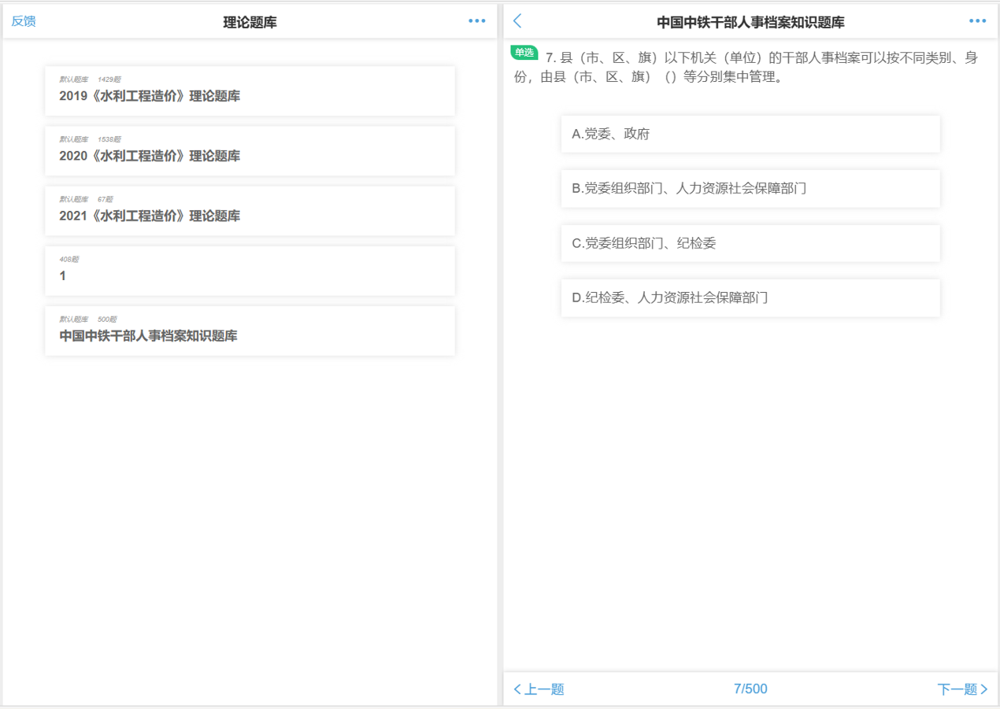
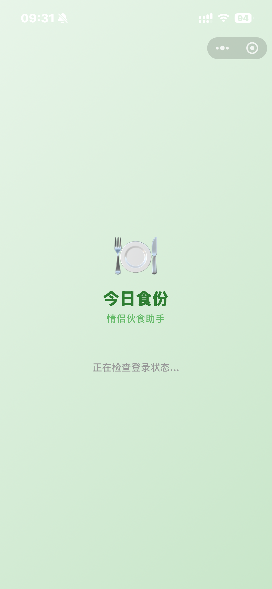
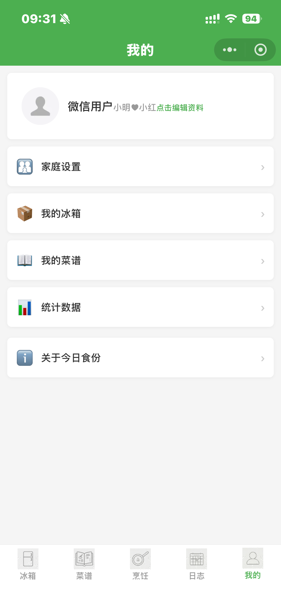
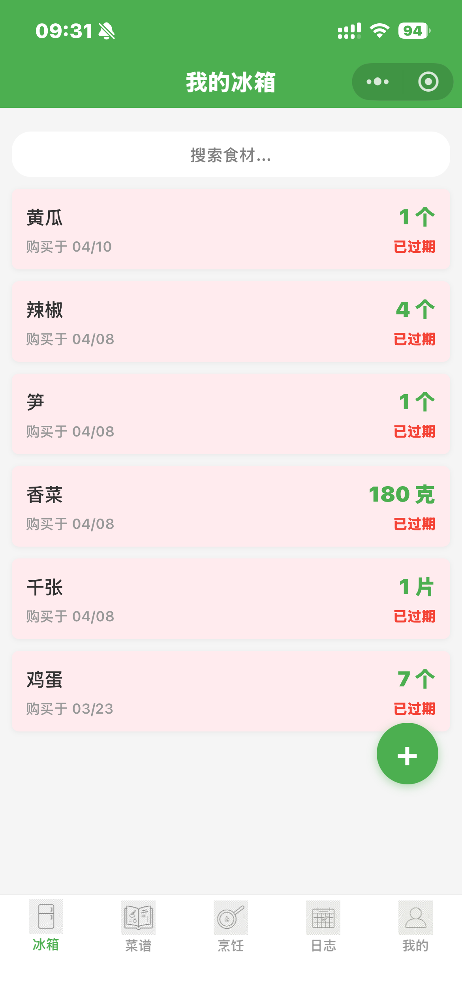
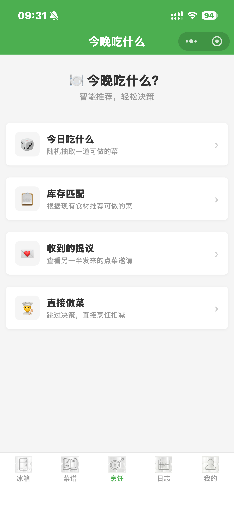
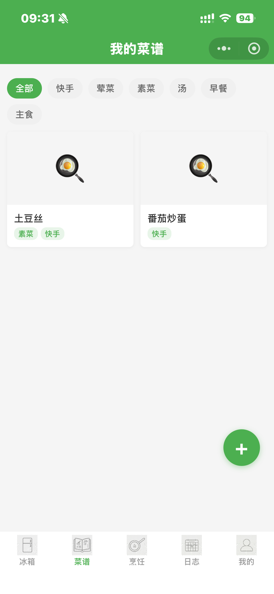

上海大学
材料基因组工程研究院 · 计算机科学与技术 · 硕士
安徽财经大学
管理科学与工程学院 · 计算机科学与技术 · 本科
ABB(中国)有限公司 - 贝加莱工业自动化
AI应用开发
负责机械设备振动分析软件 M Doctor 的 Web 从头重构、PLC 侧部署和故障诊断算法的开发。将原本需要工程师带电脑到现场采集分析振动数据的软件，重新开发为前后端分离的 Web 应用并运行在 B&R 生产的 PLC 上，使工厂员工可实时监看设备运转情况。
安徽航展自动化科技有限公司
自动化实习生 · 滁州
负责自动化系统设计、西门子 PLC 程序编写、传感器配置；参与工厂自动化生产线升级改造与智能仓储系统开发；具备工业现场调试与问题定位经验。
语言与环境
AI / 深度学习
工程与开发
AI 辅助编程
该模型采用 Transformer 架构而非传统的图神经网络对晶体结构进行建模，旨在快速预测材料的声子态密度（Phonon Density of States）。 通过引入原子相对位置编码，能够更精准地捕捉长程相互作用。


探索使用对比学习（Contrastive Learning）方法进行材料属性预测训练，并为谱线或序列等专用数据构建了专门的编码器。
在贝加莱（B&R）实习期间负责的重点项目。将原本需要工程师现场采集数据的传统软件重构为前后端分离的 Web 应用，并部署在客户设备的 PLC 上，实现工厂员工对设备运转状态的实时监控与故障诊断。

一个将题库转换为刷题程序的工具。基于开源程序修改，增加了通过脚本将自定义题库转换为 JSON 格式并导入的功能。解决了同类产品付费且使用复杂的痛点。
一个自定义商品售卖的小程序平台，旨在为用户提供零手续费的开店体验。采用微信小程序原生开发 + 腾讯云开发（CloudBase）架构。





情侣伙食助手，基于微信小程序云开发。包含食材入库、库存看板（过期预警）、菜谱管理及饮食日志等核心功能，实现精细化膳食管理。